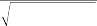

Rearranging the expression in terms of l, we get
2l2 2
1
1 1 l 1 1 1 2
B s
B s
B s
B s B s
B s B s
B s B s
SR2
B B
s s B
s s B
(12.18)
P 2l2 21 1 2l 1 2 12 2 1 2 2
This expression suggests that as the value of l increases, the Sharpe ratio of the overall portfolio approaches the Sharpe ratio of the benchmark.18 If the Sharpe ratio of the unleveraged portfolio were higher than the Sharpe ratio of the benchmark, then the leverage would reduce the Sharpe ratio eventually.
12.4 STOCKS, CASH, AND SINGLE-STOCK FUTURES
One of the drawbacks to using index futures to leverage a portfolio is that the relative contribution of the is diminished in the returns of the overall portfolio. We saw in the preceding example that the con- tribution of stock picking can decrease by as much as 50%. Depending on the goals of QEPM, this may not be a concern, but there is a better way to leverage—through the use of single-stock futures. Leverage created with single-stock futures results in a leveraged rather than just a leveraged portfolio. In other words, it generates mojo.
There are practical problems with using single-stock futures, though. First of all, single-stock futures are a recent phenomenon in the industry, and only a limited number are available. As of January 31, 2005, only 122 individual stock futures were available.19 A man- ager may not find futures for all the stocks in his or her portfolio.
Second, single-stock futures that do exist have less trading liq- uidity than index futures. On January 31, 2005, the total volume of all single-security futures was 4924 contracts. If you were to divide that volume evenly among the securities, this would represent about 40 contracts per security. In fact, many securities did not even trade that day. Table 12.3 lists some of the major single-stock

P
P
P
B
B
B
B
B
B
B
B
B
18 Applying l’Hospital’s rule, lim l SR2 = 2/ 2 = SR2
19 The number of single-stock futures is growing fast. Already by April 2006 it had grown
to 200 securities. Single-stock futures trade at OneChicago, LLC, which is a joint venture created by the CME, CBOE, and CBOT for the primary purpose of trading single-stock futures (www.onechicago.com). Contract size is 100 shares of the underlying security. Regular trading hours are 8:30 a.m. to 3:00 p.m. Central time. The initial and maintenance margin requirements for single-stock futures are 20% of the cash value of the contract. This is higher than the margin requirement for index futures but still better than buying stocks outright. Also, there is no need to borrow the stock for shorting, nor is there an “uptick” rule.
T A B L E 1 2 . 3
Highest-Volume Single-Stock Futures Contracts
Company Name | Ticker | Volume | Price | % of $100 M Portfolio |
Altria Group, Inc. | MO | 1987 | 63.83 | 12.683 |
Alcoa, Inc. | AA | 1511 | 29.51 | 4.459 |
Pfizer | PFE | 286 | 24.16 | 0.691 |
eBay, Inc. | EBAY | 164 | 40.75 | 0.668 |
Apple Computer, Inc. | APPL | 107 | 76.9 | 0.823 |
Google, Inc. | GOOG | 95 | 195.62 | 1.858 |
Halliburton Co. | HAL | 53 | 41.13 | 0.218 |
Brocade Communications Systems | BRCD | 46 | 6.2 | 0.029 |
SBC Communications, Inc. | SBC | 43 | 23.76 | 0.102 |
SanDisk Corporation | SNDK | 42 | 24.7 | 0.104 |
Note: These statistics were for January 31, 2005. Price data were obtained from Bloomberg, and futures volume data were obtained from www.onechicago.com. The last column in the table is the percentage of the daily trading volume that would be represented in a $100 million portfolio. Thus, for instance, for APPL, it would represent less than 1% of the portfolio. Thus, if the manager would like a 1% or greater holding of APPL, his or her trade would take up the entire day’s trading volume. The formula is Percentage = (100 · volume · price)/100M.
futures and their volumes on January 31, 2005. The table also includes the percentage of a $100 million portfolio that the daily volume represents. Even the third most traded security has a volume that represents only 0.69% of a $100 million portfolio. For reasonable holdings of around 1% or 2% in a stock, the portfolio manager could not use single-stock futures contracts to create a leveraged position. This problem becomes more pronounced as one moves down the list of most traded securities.20
12.4.1 Theoretical Limits of Leverage
The theoretical limits to leveraging with single-stock futures are very similar to the limits using index futures. There are three essen- tial differences between the two cases, however. The first is that individual stock futures have margin requirements that are higher

20 Trading volume numbers for single-stock futures may make the numbers appear to be deceptively low. One must remember that the futures are based on liquid stocks; thus, theoretically, a portfolio manager could place a series of limit orders on individual stock futures and have them executed. Single-stock futures trade on GLOBEX, just like index futures, and with the appropriate systems in place, even basket orders of single-stock futures could be placed through GLOBEX.
than index futures. As of July 2006, all single-stock futures have a margin requirement of 20%. The second difference is that single- stock futures allow the manager to increase the maximum by specifically leveraging higher- stocks or decrease it by specifically leveraging lower- stocks. (We define the maximum as the maxi- mum obtainable if all stocks are leveraged in relative proportion to their weight in the portfolio.) Leveraging single stocks according to their ’s is also a sensible way to leverage one’s if one already has chosen the optimal stock weights. A third concern that is unique to leveraging with single-stock futures is that if the futures are not actively traded, then it will be possible to achieve only partial lever- age. For the time being, we will assume that the futures are traded actively enough for the portfolio to achieve maximum leverage.
For single-stock futures, the formulas for the maximum lever-
age and maximum are identical to Eqs. (12.10) and, (12.11) but with the single-stock futures margin requirement replacing the index futures margin requirement.
12.4.2 Leverage Mechanics
There are numerous ways to weight single-stock futures in order to achieve the desired level. In this subsection we consider three specific scenarios that a portfolio manager might encounter, each requiring a different weighting scheme.
In one scenario, all single-stock futures contracts are suffi- ciently liquid to use for leverage. In this case, to achieve his or her target * for the overall portfolio, the manager must purchase the following amount of futures contracts21:
1s Vtwi
Ni
sqs pi,t
(12.19)
In this equation, qs is the contract multiplier for single-stock futures, which is equal to 100, pi,t is the price of stock i, s is the of the stock portfolio with respect to the benchmark, and wi is the weight of stock i in the equity portfolio. The preceding formula indicates that the portfolio manager may purchase single-stock futures for each stock in proportion to the weight of the stock in the equity portfolio.

21 See Appendix 12A for the derivation of these equations.
The second scenario is that only a subset N1 of the N stocks in the portfolio are available for single-stock futures trading. The manager therefore uses only the stocks with futures to achieve the desired . To achieve his or her target * for the overall portfolio, he or she must purchase the following amount of futures contracts:
1s Vtw i

Ni
sqs pi,t
(12.20)
i
i
i
where w~ is the relative weight of the subset of stocks whose futures
~ N1
~
~
~
contracts are bought from or sold to each other (that is, wi = wi/j=1
j s ~
j s ~
j s ~
w ), is the weighted average of the subset of stocks whose
futures contracts are bought and sold (that is, s = N1 w~ ), and all
other variables are as defined previously.
i=1 i i
In the third scenario, there are futures for some of the stocks in the portfolio, and the manager decides to combine single-stock futures with index futures to achieve the desired leverage. He or she purchases the following amounts of single-stock futures contracts and index futures, respectively:
1s Vtw i
Ni
1
N1 w
(12.21)
q p
i1
i
w
w
w
s i,t s
N1 f
i1 i
1 N1 w N1 N q p
w
w
w
N
i1 i
i1
i s i,t
(12.22)
f
N1
i1 i
qSt
An example might help to further illustrate these three sce- narios. Suppose that the benchmark is the S&P 500 and that we have a simple five-stock portfolio consisting of Altria Group (MO), Alcoa (AA), Pfizer (PFE), eBay (EBAY), and Apple Computer (APPL). Table 12.4 contains the portfolio and the weights of each stock in the portfolio. Using the preceding formulas, we can com- pute the number of futures contracts required to achieve our desired *. As in previous examples, let’s assume that our desired
* = 2 and that there are $100 million in equity capital. The actual portfolio of the five stocks in this example is 1.15, and the i for each of the stock’s futures contract is listed in the table (we assume that it is the same as the underlying stock’s ). The prices of each stock are also listed in the table. For this example, we do not round
the futures contracts to the nearest whole number. Of course, in reality, you would have to do this.
Let’s walk through the example for each of the three scenarios just outlined. Under the first scenario, in which we can use all the stocks’ futures contracts to create leverage, we purchase a total
T A B L E 1 2 . 4

Example of Single-Stock Leverage in a Simple Portfolio
MO | 0.200 | 0.55 | 63.83 | 2325.43 | $14,843,205.57 |
AA | 0.200 | 1.71 | 29.51 | 5029.89 | $14,843,205.57 |
PFE | 0.300 | 0.39 | 24.16 | 9215.57 | $22,264,808.36 |
EBAY | 0.100 | 2.07 | 40.75 | 1821.25 | $7,421,602.79 |
APPL | 0.200 | 1.86 | 76.90 | 1930.20 | $14,843,205.57 |
Total | 1.15 | $74,216,027.87 | |||
Method 2 | |||||
Ticker | w~ i | i | pi,t | Ni | Vf,i |
MO | 0.286 | 0.55 | 63.83 | 4,691.72 | $29,947,275.92 |
AA | 0.286 | 1.71 | 29.51 | 10,148.18 | $29,947,275.92 |
PFE | 0.429 | 0.39 | 24.16 | 18,593.09 | $44,920,913.88 |
EBAY | 0.000 | 2.07 | 40.75 | 0.00 | $0.00 |
APPL | 0.000 | 1.86 | 76.90 | 0.00 | $0.00 |
Total | 0.81 | $104,815,465.73 | |||
Method 3 | |||||
Ticker | w~ i | i | pi,t | Ni | Vf,i |
MO | 0.286 | 0.55 | 63.83 | 3,072.03 | $19,608,745.68 |
AA | 0.286 | 1.71 | 29.51 | 6,644.78 | $19,608,745.68 |
PFE | 0.429 | 0.39 | 24.16 | 12,174.30 | $29,413,118.53 |
EBAY | 0.000 | 2.07 | 40.75 | 0.00 | $0.00 |
APPL | 0.000 | 1.86 | 76.90 | 0.00 | $0.00 |
S&P 500 | 1.00 | 1000.00 | 117.65 | $29,413,118.53 | |
Total | 0.81 | $98,043,728.42 |
Ticker
Ticker
Ticker
wi
wi
wi
i
i
i
Method 1
pi,t
Method 1
pi,t
Method 1
pi,t
Ni
Ni
Ni
Vf,i
Vf,i
Vf,i
i
i
i
Note: The variables in the table represent attributes of the stocks. wi represents the stock weight in the underlying equity portfolio, i represents the stock’s , pi,t represents the stock’s actual price as of January 31, 2005, Ni represents the num- ber of single-stock futures contracts purchased or sold, Vf,i represents the notional value of the futures contracts purchased, and w~ represents the relative weight of the subset of securities whose single-stock futures are purchased. The total ’s rep- resent the weighted-average of the subset of stocks whose futures are purchased. In method 1, this corresponds to the
of the underlying stock portfolio.
futures value of $74,216,027.87 to achieve our desired * = 2. Since the underlying portfolio has a that is higher than 1 with respect to the benchmark, we need less than an equal amount in dollars to achieve our desired leverage. The number of contracts of each single-stock futures is listed in the table.
Under the second scenario, we assume that some of the single- stock futures—say, EBAY or APPL—are not liquid enough to trade. Thus we can use only the other three securities’ futures to achieve our desired leverage. In this case we purchase a total value of
$104,815,465.73 of futures. This consists of 4692, 10,148, and 18,593 contracts of MO, AA, and PFE, respectively. Although in this sce- nario we have again achieved our desired * = 2, we have leveraged the portfolio disproportionately. The resulting portfolio is tilted toward the first three stocks.
Under the third scenario, we continue to use the first three sin- gle-stock futures, but we also use the index futures of the S&P 500 to achieve the desired *. In this case we purchase a total value of
$68,630,609 of the single-stock futures and $29,413,119 of the index futures (118 contracts). This also achieves our desired goal, but we have diluted the overall of the portfolio by using index futures.
12.4.3 Expected Returns, Risk, and Mojo
In the first scenario, the total portfolio is composed of the stock port- folio with the weight of 1 — and the portfolio of single-stock futures with the weight of l — + 1. Recall that given the benchmark return rB, the return of the stock portfolio can be expressed as
rs = s + srB + Es (12.23)
The return of the single-stock-future portfolio is essentially identical to the return of the stock portfolio. For simplicity, we assume22
rsf = s + srB + Es (12.24)
Calculation of the expected return and the variance of the total portfolio is straightforward in this case. Given the weight of the stock portfolio and the single-stock futures portfolio, the total portfolio return is
rP = (1 — )rs + (l — 1 + )rsf
= ls + lsrB + lEs (12.25)

22 This assumption is true as long as we ignore basis risk.
The expected return and the variance of the total portfolio are
E(rP) = ls + ls B = lE(rs) (12.26)
V(rP) = l2 2 2 + l2 2 = l2V(r ) (12.27)
s B s s
where B and B denote the expected return and the standard devi- ation of the benchmark, and s denotes the standard deviation of Es. We can easily calculate the Sharpe ratio (SR) of the total port- folio as well. Assuming that the risk-free rate has been subtracted
P
P
P
already, the Sharpe ratio is simply the ratio of E(rP) to J V ( r ) :

l2 2 2 l2 2
l2 2 2 l2 2
l2 2 2 l2 2
s B
s B
s B
s
s
s
SRP
l s ls B
SRs
(12.28)
Thus the Sharpe ratio of the total portfolio is identical to the Sharpe ratio of the stock portfolio, regardless of the leverage. That is, the leverage does not change the Sharpe ratio in the first scenario.
In the second scenario, the total portfolio is again composed of the stock portfolio and the single-stock futures portfolio. The weights of these portfolios are identical to the first scenario. The dif- ference is the composition of the single-stock futures portfolio. The
single-stock futures portfolio is N1 stock futures that are liquid
enough. The weights of these futures are given by w~ = w /N1 w ,
i i 1
i = 1, …, N1.
j= j
It will be useful to think of the stock portfolio as composed of two subportfolios: the portfolio of stocks with liquid futures and the portfolio of stocks without liquid futures. Let us call the first portfo- lio s1 and the second s2. Then s1 is the portfolio of N1 stocks with the
i
i
i
weights w~ defined earlier. s2 is the portfolio of the remaining stocks
~ N
with the weights wi = wi/j=N1+1 wj, i = N1 + 1, …, N. Defining =
N1
j=1
wj, we may express the return of the stock portfolio as
rs = rs1 + (1 — )rs2
= [s1 + (1 — )s2] + [s1 + (1 — ) s2]rB (12.29)
+ Es1 + (1 — )Es2
Assuming that the return of the single-stock futures is identical to the return of the underlying stocks, the return of the single-stock futures portfolio is identical to the return of portfolio s1.23 Thus we may express the return of the single-stock futures portfolio as

23 Note that the weights of futures in the futures portfolio are identical to the weights of stocks in portfolio s1.
rsf = rs1 = s1 + s1rB + Es1 (12.30)
Now, calculation of the expected return and the variance of the total portfolio is straightforward. Given the weight of the stock portfolio and the single-stock futures portfolio, the total portfolio return is
rP = (1 — )rs + [l — (1 — )]rsf
= [l — (1 — )(1 — )]rs1 + (1 — )(1 — )rs2
= [l — (1 — )(1 — )]s1 + (1 — )(1 — )s2 (12.31)
+ {[l — (1 — )(1 — )]s1 + (1 — )(1 — )s2}rB
+ [l — (1 — )(1 — )]Es1 + (1 — )(1 — )Es2
The expected return and the variance of the total portfolio are
E(rP) = [l — (1 — )(1 — )]s1 + (1 — )(1 — )s2
+ {[l — (1 — )(1 — )]s1 + (1 — )(1 — )s2}B (12.32)
B
B
B
V(rP) = {[l — (1 — )(1 — )]s1 + (1 — )(1 — )s2}2 2
s1
s1
s1
s2
s2
s2
+ [l — (1 — )(1 — )]2 2 + [(1 — )(1 — )]2 2 (12.33)
+ 2[l — (1 — )(1 — )][(1 — )(1 — )] s12
where s12 is the covariance between Es1 and Es2.
P
P
P
Assuming that the risk-free rate already has been subtracted, the Sharpe ratio (SR) is simply the ratio of E(rP) to JV ( r ) , and the squared Sharpe ratio is the ratio of E(rP)2 to V(rP). Expressing the squared Sharpe ratio as a function of the leverage l, one can find
the relationship
SR2
s1
s1B
SR2
(12.34)
2
2
2
P 2 2 2 s1
s1 B s1
as the leverage becomes large.24 That is, as the leverage gets larger, the risk-return relationship of the total portfolio becomes very sim- ilar to that of portfolio s1, the portfolio of stocks with liquid futures. In the third scenario, the total portfolio is composed of the stock portfolio with weight 1 — , the index future with weight (1 — )(l — 1 + ), and the single-stock futures portfolio with weight (l — 1 + ). The single-stock futures portfolio is the same as the one in the second scenario, that is, the portfolio of N1 stock
j=1
j=1
j=1
futures that are liquid enough, with weights w~i = wi/ N1 wj, i = 1,
…, N1. We will assume that the futures index return is identical to

24 Use L’Hospital’s rule to show this.
the benchmark return25 (i.e., rf = rB). The returns for the stock port- folio and for the single-stock futures portfolio are identical to those of the second scenario, as described in Eqs. (12.29) and (12.30).
The return of the total portfolio can be calculated using the weights of the three subportfolios:
rP = (1 — )rs + (1 — )(l — 1 + )rf + (l — 1 + )rsf
= lrs1 + (1 — )(1 — )rs2 + (1 — ) (l — 1 + )rB
= ls1 + (1 — )(1 — )s2 (12.35)
+ [ ls1 + (1 — )(1 — )s2 + (1 — )(l — 1 + )]rB
+ lEs1 + (1 — )(1 — )Es2
The expected return and the variance of the total portfolio are
E(rP) = ls1 + (1 — )(1 — )s2
[ ls1 + (1 — )(1 — )s2 + (1 — )(l — 1 + )]B (12.36)
B
B
B
s2
s2
s2
V (rP) = [ ls1 + (1 — )(1 — )s2 + (1 — )(l — 1 + )]2 2
s1
s1
s1
+ 2l 2 2
+ (1 — )2 (1 — )2 2
(12.37)
+ 2 l(1 — )(1 — ) s12
where s12 is the covariance between Es1 and Es2 as defined before. Assuming that the risk-free rate already has been subtracted,
2
2
2
the squared Sharpe ratio is the ratio of E(rP)2 to V(rP). Expressing the squared Sharpe ratio as a function of the leverage l, one can find the following relationship:
P
P
P
SR2
s1
s1
1 B
(12.38)
1 2 2 2 2
s1 B s1
as the leverage increases. Note that the right-hand side of this equation can be interpreted as the Sharpe ratio of a portfolio made of s1 (the portfolio of stocks for which liquid futures are available) and the benchmark, with the respective weights of and 1 — . That is, the Sharpe ratio of the total portfolio approaches the Sharpe ratio of rs1+ (1 — )rB as the leverage increases. This is not
surprising. As the leverage increases, the portfolio is dominated by
the stocks with liquid futures available and the benchmark.
From these formulas, we find that the portfolio’s gets the biggest boost from leverage that uses all single-stock futures

25 We are assuming that the underlying security of the futures contract is the benchmark and that there is no basis risk.